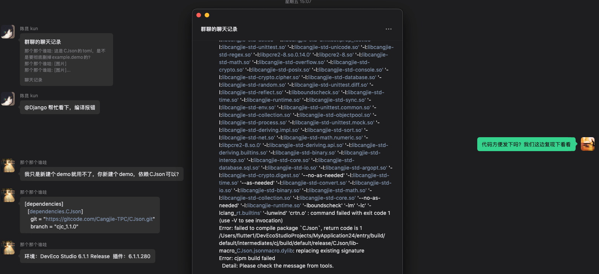
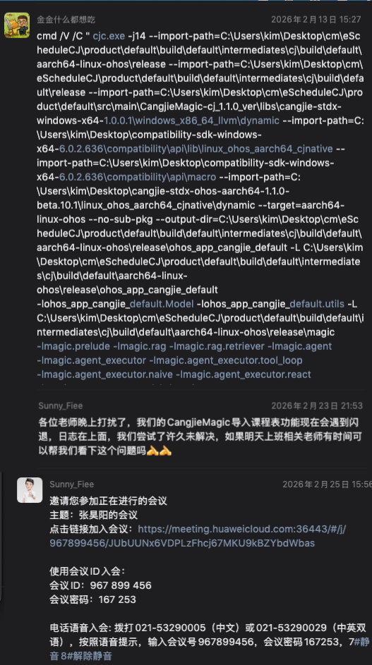
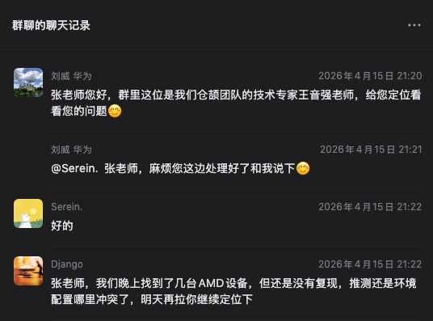
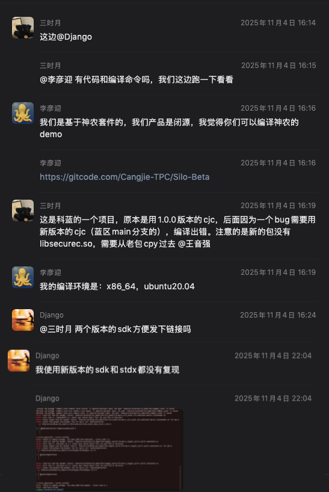
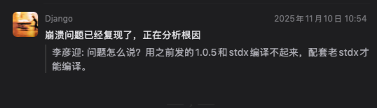

提升仓颉编译器信息不全 ICE 问题首轮信息完整率，缩短有效分析启动时间
面向无法完整获取客户现场代码的 ICE 问题，建立首轮信息采集、问题分流和目标度量口径，缩短从客户反馈到开发有效分析的时间。
课题基本信息
团队组建与能力评估
| 角色覆盖 | 成员能力 | 对课题的支撑 |
|---|---|---|
| 编译器研发 | 覆盖前端、后端、工具链和构建链路问题分析经验。 | 支撑 ICE 阶段判断、debug 版本复现和根因分析入口确认。 |
| 客户问题支撑 | 具备客户反馈收敛、复现材料问询和跨团队协同经验。 | 支撑首轮信息采集模板、问询清单和补充材料闭环。 |
| 流程与质量改进 | 具备 issue 台账、数据口径、triage 分流和过程指标管理经验。 | 支撑样本分类、目标度量、过程复测和成果固化。 |
客户现场 ICE 反馈难以快速进入有效分析
客户现场通常只能提供编译器版本、架构平台和 ICE 日志，能判断“在哪个阶段挂”，但不足以还原“为什么挂”。
客户侧
编译流程被 ICE 中断，客户难以通过普通诊断信息自行规避。
支撑侧
需要反复补充源码、命令、依赖、SDK 版本和运行环境。
研发侧
缺少最小复现材料时，开发无法直接进入复现和根因分析。
客户支撑过程存在多轮补充和环境复现
客户侧反馈通常需要补充代码、依赖、环境和完整编译日志。

客户支撑过程存在多轮补充和环境复现
编译命令、依赖路径和会议补充信息需要完整保留，便于开发复现。

客户支撑过程存在多轮补充和环境复现
现场复现依赖设备、环境和责任角色协同确认。

客户支撑过程存在多轮补充和环境复现
客户工程、SDK 版本、架构平台和编译日志共同决定复现效率。

客户支撑过程存在多轮补充和环境复现
版本替换后仍需确认是否复现，并继续进入根因分析。

从 issue 规模和启动成本中形成备选主题
统计周期：2025-12-23 至 2026-06-23。统计对象为 Cangjie/cangjie_compiler 仓库 bug issue。
386 个
近 6 个月 bug issue 总量。
42 个 / 10.9%
ICE 关键词命中 bug issue。
14 个 / 33.3%
信息不全的 ICE 样本。
98 人日
信息不全 ICE 有效分析启动成本。
| 备选方向 | 样本数量 | 估算启动成本 | 问题特征 |
|---|---|---|---|
| 构建/链接/产物问题 | 103 | 154.5 人日 | 问题规模和总成本最高，根因分散在构建系统、产物和平台差异。 |
| 平台/互操作兼容问题 | 62 | 124 人日 | 依赖模块设计、ABI 和平台兼容策略，研发专项属性较强。 |
| 非 ICE 崩溃/运行时异常 | 45 | 112.5 人日 | 可复用部分采集机制，但触发路径和责任模块分散。 |
| 信息不全的 ICE | 14 | 98 人日 | 单问题成本最高，瓶颈集中在信息采集、分流和复现准备。 |
信息不全 ICE 最符合 QCC 承载条件
评分采用 1 / 3 / 6 / 9 四档；加权得分 = Σ(单项评分 × 权重)，满分 900。
| 候选主题 | 客户阻塞影响 25% | 启动成本 25% | 小组可控性 20% | 周期闭环 15% | 指标可量化 15% | 加权得分 |
|---|---|---|---|---|---|---|
| 构建/链接/产物问题 | 3 | 6 | 3 | 3 | 6 | 420 |
| 平台/互操作兼容问题 | 3 | 6 | 3 | 3 | 3 | 375 |
| 非 ICE 崩溃/运行时异常 | 6 | 6 | 3 | 3 | 3 | 450 |
| 信息不全的 ICE | 9 | 9 | 9 | 9 | 9 | 900 |
评分标准来自问题数据和 QCC 可控性
同一维度内按 1 / 3 / 6 / 9 拉开差距，避免只按主观偏好选题。
| 评价维度 | 9 分 | 6 分 | 3 分 | 1 分 |
|---|---|---|---|---|
| 客户阻塞影响 25% | 直接中断客户编译，客户无法自助规避，需研发介入。 | 影响客户构建或交付，但存在临时规避路径。 | 主要影响局部功能或内部验证。 | 客户感知弱，主要为内部优化。 |
| 启动成本 25% | 单问题启动成本 ≥7 人日，且需要客户、支撑、研发多轮协同。 | 单问题启动成本 2-6 人日，需要跨角色补充材料。 | 单问题启动成本 1-2 人日，常规信息可启动分析。 | 单问题启动成本 <1 人日，可直接定位或复用既有流程。 |
| 小组可控性 20% | 主要依赖模板、清单、分流规则和样本台账，小组可直接推动。 | 小组可推动关键环节，但依赖部分模块或平台配合。 | 主要依赖单模块研发投入，小组只能协调。 | 超出小组职责或依赖架构级改造。 |
| 周期闭环 15% | 一个 QCC 周期内可完成标准化、试运行和指标复测。 | 一个周期内可完成部分流程改进，验证样本有限。 | 周期内只能完成方案设计，难以形成复测结果。 | 周期内无法闭环，依赖长期工程治理。 |
| 指标可量化 15% | 可用完整率、补充次数、启动时间直接度量。 | 可间接度量，但需人工归因或样本复核。 | 指标口径不稳定，依赖主观判断较多。 | 缺少可持续记录口径，难以验证改善。 |
选题后先明确课题边界
课题起点为客户反馈 ICE，终点为开发具备复现和有效分析材料。
本课题解决
- 首轮信息不完整，无法直接进入复现和分析
- 问题阶段和责任模块分流慢
- 客户不能提供完整源码时推进路径不清晰
- 历史 ICE 相似案例难复用
本课题不解决
- 一个周期内消除所有 ICE
- 所有编译器模块的根因修复
- 客户工程完整复现能力建设
- 大规模编译器架构重构
信息不全 ICE 的流转链路集中在 6 个环节
启动前耗时以 14 个信息不全 ICE 样本估算。
| 流程环节 | 启动前耗时占比 | 主要等待原因 |
|---|---|---|
| 客户反馈 | 5% | 问题登记和基本信息确认。 |
| 首轮采集 | 25% | 源码、命令、依赖、环境、附件是否齐备需要反复确认。 |
| 支撑初判 | 10% | 根据日志判断编译阶段和责任方向。 |
| 补齐复现 | 45% | 等待最小复现工程、脱敏材料或替代材料。 |
| 研发复现 | 10% | 准备 debug 版本和复现环境。 |
| 有效分析启动 | 5% | 材料齐备后进入根因分析。 |
最大卡点是最小复现材料缺失
样本对象为 14 个信息不全 ICE。
| 流转卡点因素 | 样本数 | 占比 | 影响 | 对应目标方向 |
|---|---|---|---|---|
| 缺少可脱敏最小复现工程/源码 | 8 | 57.1% | 开发无法启动复现，只能等待客户补充或内部重建。 | 提升首轮最小复现材料完整率 |
| 编译命令、依赖配置不完整 | 3 | 21.4% | 无法还原客户构建路径，容易误判为环境或集成问题。 | 降低二次补充信息比例 |
| SDK、架构平台、插件版本不完整 | 2 | 14.3% | 复现环境准备时间拉长，分流效率下降。 | 缩短有效分析启动时间 |
| 日志和编译阶段信息不完整 | 1 | 7.1% | 无法快速判断前端、后端、链接或工具链阶段。 | 提升首轮信息完整率 |
围绕最大卡点设定 3 个过程目标
目标由“最小复现材料缺失”这一主要因素展开。
| 目标指标 | 改善方向 | 目标值 | 对应因素 |
|---|---|---|---|
| 首轮最小复现材料完整率 | 提升 | 相对基线提升 ≥30% | 缺少可脱敏最小复现工程/源码 |
| 二次补充信息比例 | 降低 | 相对基线降低 ≥30% | 编译命令、依赖配置和环境信息不完整 |
| 有效分析启动时间 | 缩短 | 相对基线降低 ≥30% | 首轮采集和补齐复现环节等待 |
| 目标值 | 来源依据 | 测算逻辑 |
|---|---|---|
| +30% | 14 个信息不全 ICE 中，8 个缺少可脱敏最小复现工程/源码，占 57.1%。 | 通过标准采集模板和脱敏材料清单，优先覆盖最大缺口；目标按主要缺口 50% 改善空间折算。 |
| -30% | 二次补充主要来自命令、依赖、SDK、架构平台、日志阶段等缺失项，合计 42.8%。 | 将高频缺失项纳入首轮必填字段，目标取高频缺失项可控改善区间。 |
| -30% | 首轮采集和补齐复现合计占启动前耗时 70%。 | 改善集中在 70% 主要耗时环节，按其中 40% 可压缩空间折算为整体启动时间降低 30%。 |
目标可通过流程标准化和材料模板落地
措施集中在首轮采集、支撑问询、triage 分流和最小复现准备。
| 关键卡点 | 改善措施 | 对目标的贡献 |
|---|---|---|
| 最小复现材料缺失 | 建立 ICE 标准信息采集模板、脱敏样本要求和最小复现材料清单。 | 提升首轮最小复现材料完整率。 |
| 命令和依赖信息缺失 | 固化 cjc/cjpm 命令、依赖配置、SDK 版本、架构平台的必填项。 | 降低二次补充信息比例。 |
| 责任方向初判慢 | 建立按日志阶段、错误位置和产物阶段分流的 triage SOP。 | 缩短有效分析启动时间。 |
| 相似案例难复用 | 沉淀 ICE 样本台账，记录阶段、缺失项、复现路径和处理结果。 | 减少重复问询和重复复现准备。 |
QCC主题及目标评审 · 仓颉编译器信息不全 ICE 问题首轮信息完整率提升